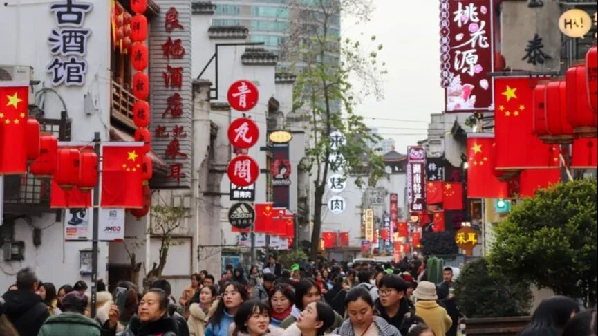
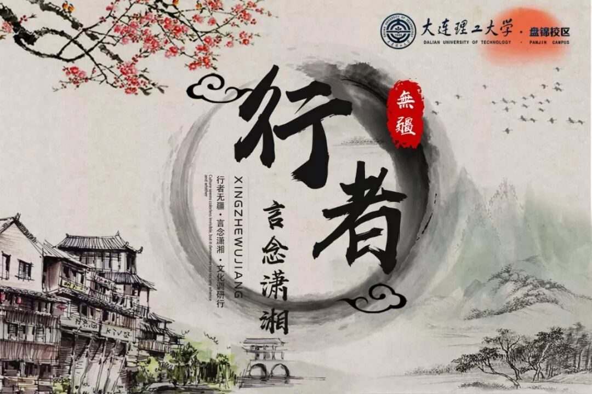
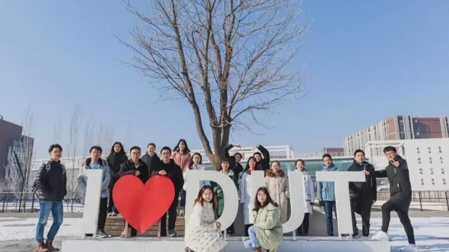
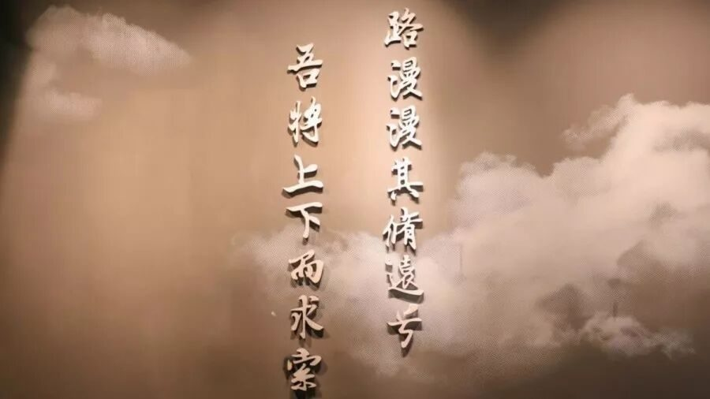
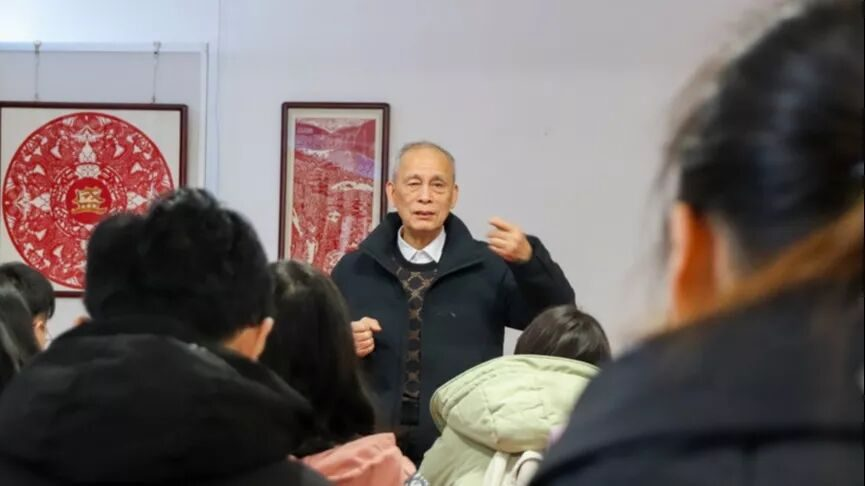
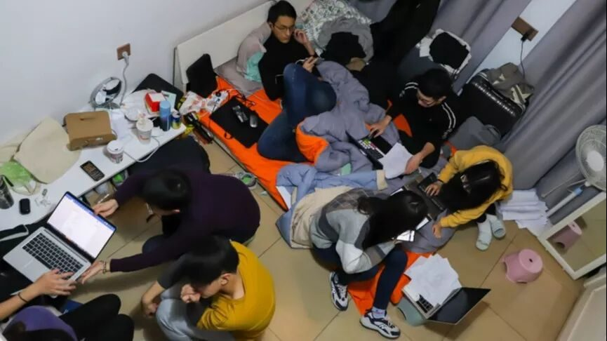
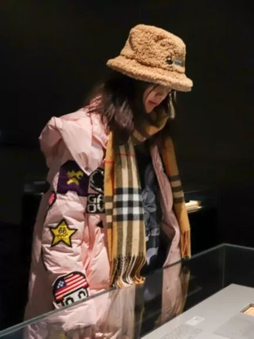
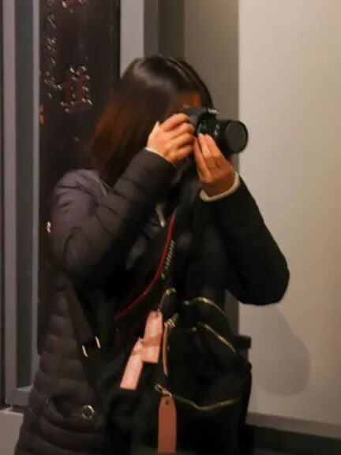
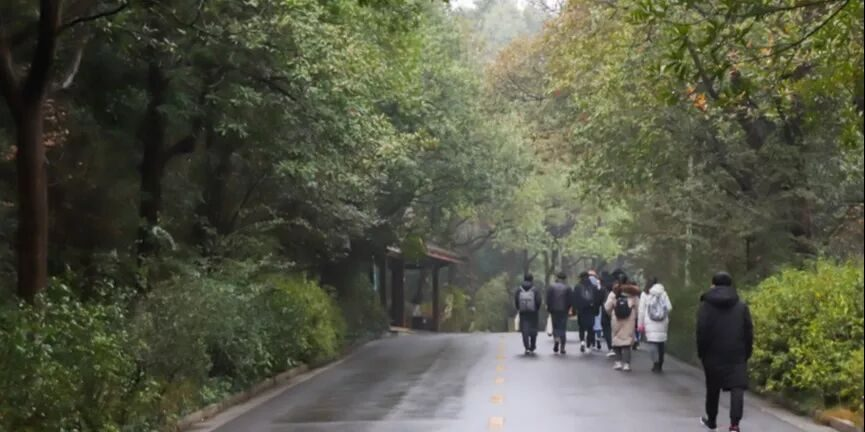
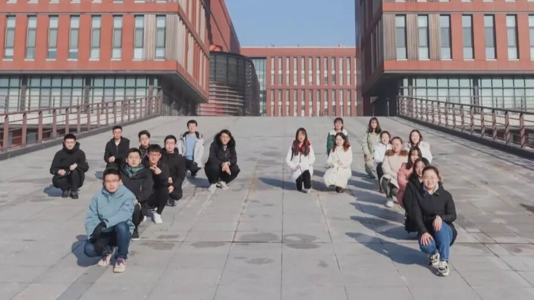

【赋墨沉湘·二】你是我来生胸前的记号

山海的浩瀚
宇宙的浪漫
都在我的内心翻腾
让我披星戴月
奔向理想和你
潇湘逐梦
数千古风流名仕
长沙寻史
探文物前世今生
别来无恙，你在心上

闲云潭影，物换星移，距离上次源洄渝州的旅程已经过去了半年光景。在这期间，我也犹豫了很久要不要留下来，不留的原因有很多，但是因为热爱，我选择继续。曾经有人告诉我说，人生本来就不易，在大学里如果遇到什么喜欢的事，就去做吧，不要有所顾忌。所以，与其说是个人感悟，我更愿意将这篇文章称作是我写给行者无疆的情书。行者无疆是去年七月送我的礼物，现在我将这份欣喜拆开来，慢慢说给你们听。

致行者无疆：
我在这个寒假里再次与你相逢，感谢你还能接纳我，即使前路漫长，我也愿和你一起奔向远方。关关难过关关过，前路漫漫亦灿灿。

你是我来生胸前的记号
言念潇湘，楚材于斯
思其情愫，乱我心曲
长沙是一座怀旧的城市。无论是在爱晚亭里静赏落叶飘零，还是在橘子洲头看万山红遍，都弥漫着近代百年的气息。这种历史感的气息不同于其他城市，与杭州的秀气，西安的古韵，北京的辉煌都不同，这所城市从骨子里散发出一点别致的矛盾的美感。

比如粗犷和细腻的统一，粗就极粗，粗到匪气横生，正如湖南人自诩的“霸蛮”；细也细腻到极致，潇湘的温柔和优雅是最具有灵气的，美而不弱，身处其间便能真切地感受到。
几千年前，屈原义无反顾地背负起家国天下的重任，在艰险曲折的道路上跋涉求索，千年年后，湖湘精神锐然而出——“心忧天下，敢为人先”。这是宏大浪漫、气息不止的传承，更是对湖湘历史文化的过去，现在，将来的最好的总结。


“在寂寞里守一颗初心，在喧嚣里守一场凝望”的非遗传承人带给我的触动尤为深刻。远方无穷，历史无涯。唯有非物质文化遗产，能穿透时间和空间的长河，在手口相传间记录人类文明的延续。老先生穷尽他的一生，致力于剪纸文化的宣扬和传承，他说他还在与时间赛跑，殊不知，他早就已经超越了时间。
我们的纪念
这个标题的灵感来源于前几天和朋友讨论的一部古老电视剧的主题曲。于我而言，行者无疆是一个整体，正如上期有队员提到的“行者无疆家文化”。两期实践下来，带给我的不止有满满的知识，还有甜甜的友谊。

我们一起走过长沙的大街小巷，一起抱怨南方冬天的“法术攻击”过于残忍，一起喝心心念念的茶颜悦色……那些我们一起度过的日子以及衍生出来的琐碎，都浸泡在长沙的夜色中，滴落在湘江里，溅出漫天的星斗，扑朔迷离。岁月长长，人海茫茫，何其有幸，与君相遇。


行者无疆·言念潇湘

这个感悟写得着实艰难，有太多想说的话，却又不知道如何开口，一直修修改改但还是觉得自己语无伦次。纵有千般万般的不舍，也只能挥挥手道别，期待下一次相遇。
言念潇湘的故事至此告一段落，但我们的船还要继续航行，扯起逆风的帆，在山水之间听听杜鹃鸟的啼叫，听久了，那啼叫声不觉也有超越的飞扬的尾音。

这段苦旅以渺小启程，以伟大结束。
我们不在长沙，我们从未离去。
来源 | 行者无疆实践团
文字 | 黄玲
排版 | 张清雅
审核 | 段智然 康艳虎
行者无疆实践团
QQ：2758025831

随行者一起认识世界
长按二维码